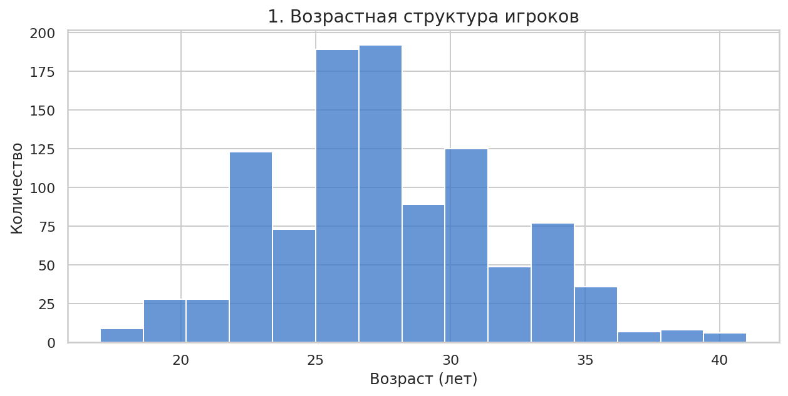
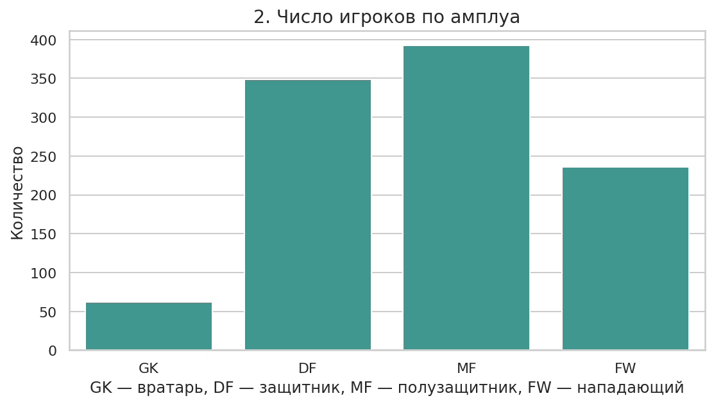
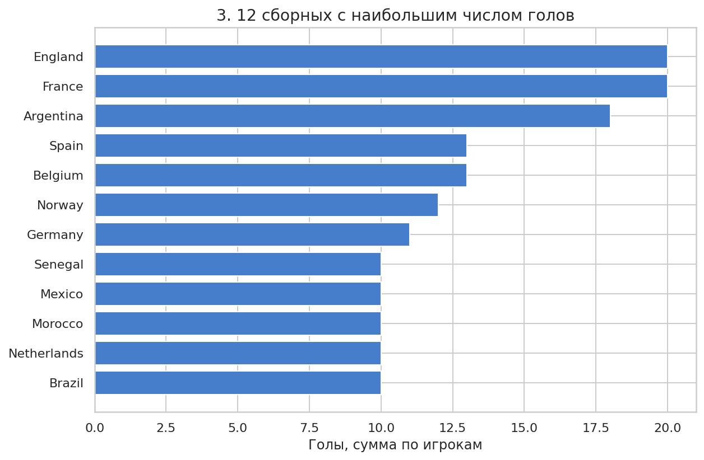
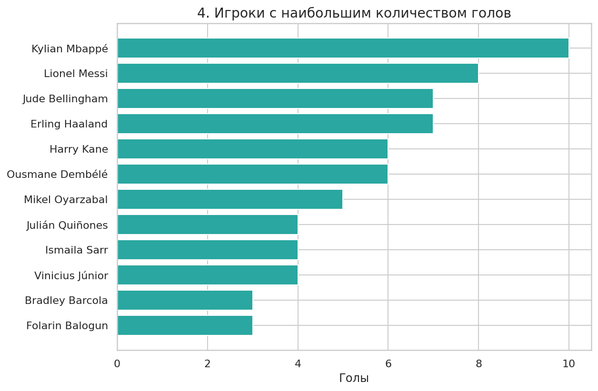
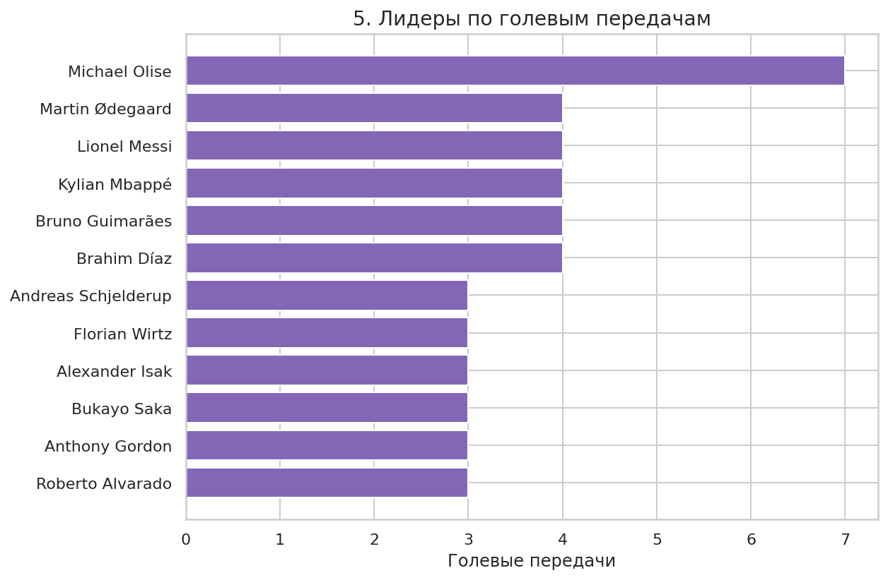
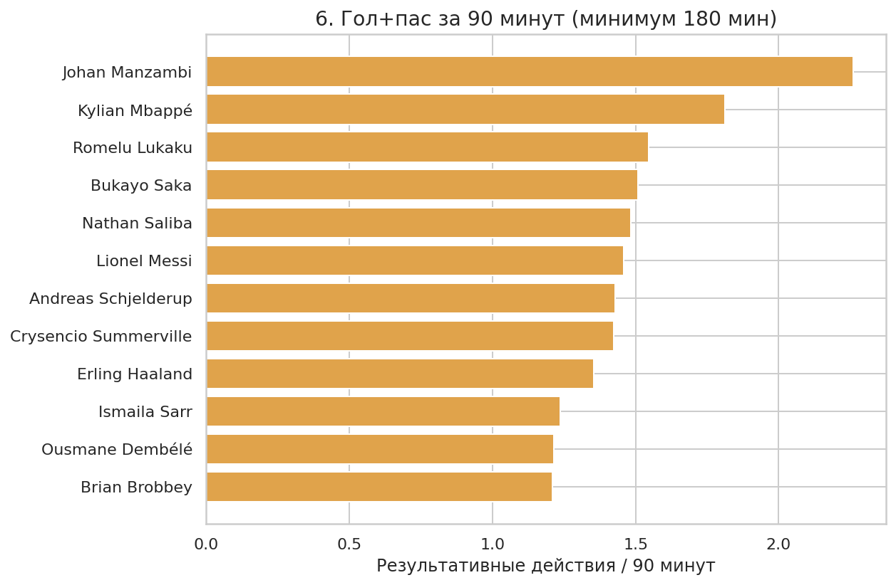
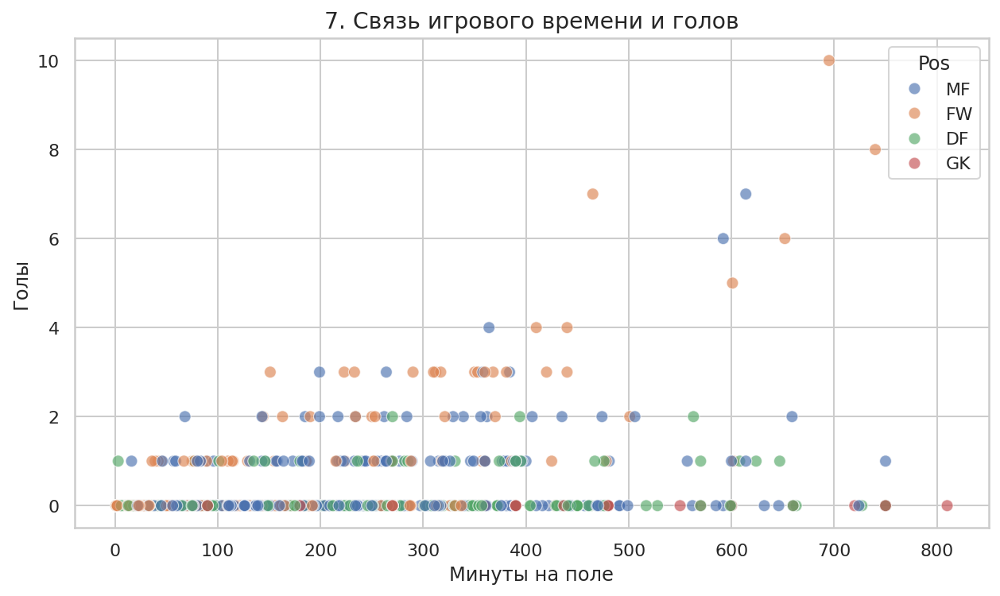
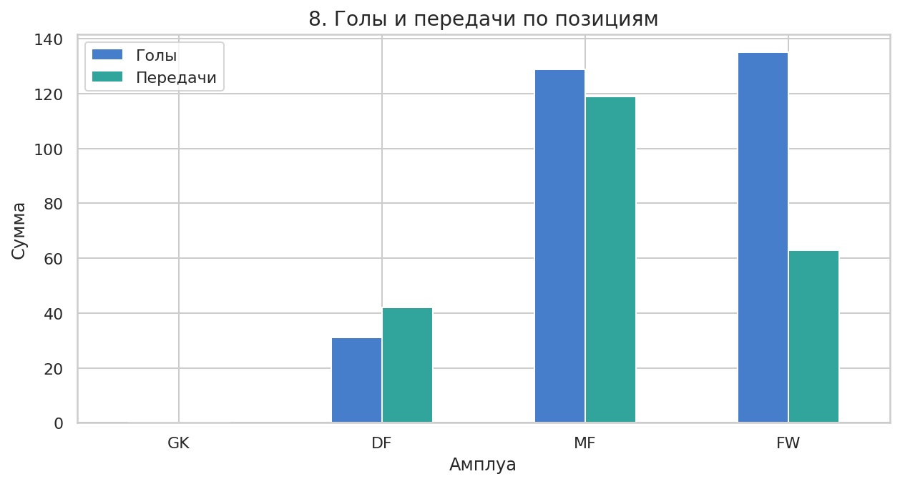
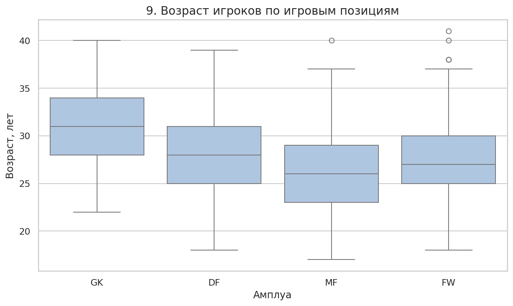
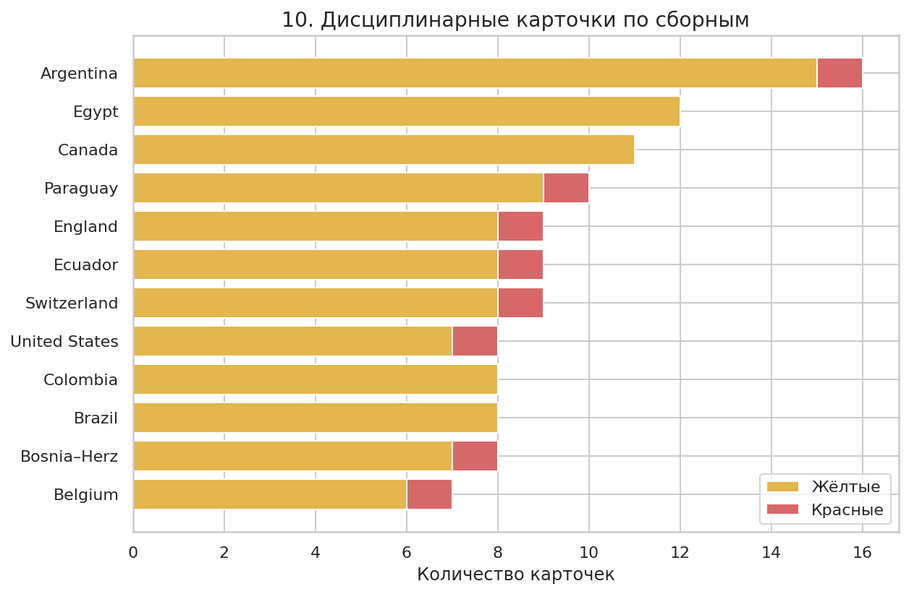

Возраст игроков
Гистограмма распределения футболистов по возрасту; помогает определить преобладающие возрастные группы.
Автор: Власов Максим Николаевич · Группа: ИСТZS-3401
Анализ CSV с помощью Python, pandas, seaborn и matplotlib.
Источник: предоставленный файл wcplayerstatistics2026.csv. Исследуются количество матчей, игровое время, позиции, голы, ассисты, возраст и дисциплинарная статистика.
Удаление пустых строк, повторов и неверных ключевых записей; приведение типов, обработка отсутствующего клуба и второй позиции.
Min–max нормализация выбранных числовых показателей в диапазон [0, 1]. Расчет голов и передач на 90 минут.
Группировка pandas по сборным и позициям, сравнение игроков, визуализации и интерпретация ограничений.
Кто представлен в выборке: возраст и игровые позиции.

Гистограмма распределения футболистов по возрасту; помогает определить преобладающие возрастные группы.

Сравнение представленности игровых амплуа в наборе данных.
Сравнение сборных и игроков по голам, передачам и результативности на 90 минут.

Сумма голов, записанных за футболистами каждой сборной в файле; не обязательно эквивалент официальному протоколу.

Абсолютное количество голов. Время на поле здесь не учитывается.

Показывает игроков, которые чаще всего создавали голы для партнёров по данным файла.

Нормировка на игровое время. Игроки с менее чем 180 минутами исключены из этого рейтинга для уменьшения эффекта малой выборки.
Сопоставление времени на поле, игровой позиции, возраста и игровых результатов.

Диаграмма рассеяния помогает увидеть, что большое число сыгранных минут не гарантирует высокую результативность.

Совокупное количество голов и ассистов игроков каждого амплуа. Размер групп разный, поэтому это не рейтинг средней эффективности.

Медиана, квартили и возможные экстремальные значения возраста в четырёх игровых группах.
Дисциплинарные показатели сборных по числу карточек.

Сумма предупреждений и удалений игроков по сборным; не учитывает количество проведённых каждой сборной матчей.